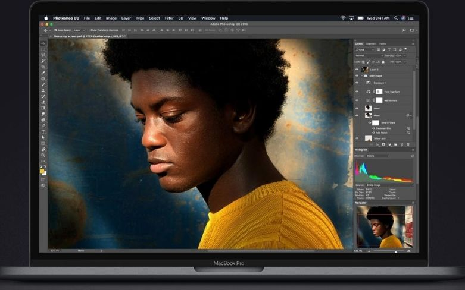
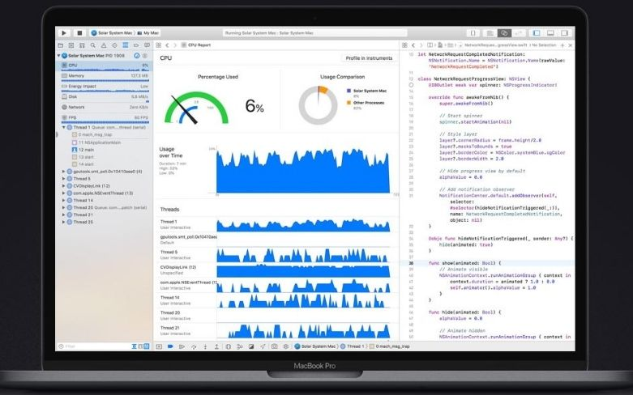

MacBook Pro nâng tầm khái niệm notebook lên một tầm cao mới, với hiệu năng và tính di động chuẩn mực. Cùng phác họa và phát triển ý tưởng của bạn nhanh hơn bao giờ hết, nhờ có sự hỗ trợ của vi xử lý hiệu năng cao cùng với bộ nhớ, dung lượng lưu trữ và đồ họa tân tiến.
Với bộ xử lý Intel Core thế hệ thứ tám, MacBook Pro đạt đến tầm cao mới về hiệu năng tính toán. Model 15 inch hiện có bộ xử lý Intel Core i9 6 nhân, hoạt động nhanh hơn tới 70% so với thế hệ trước, cho phép tốc độ Turbo Boost lên tới 4,8 GHz. Trong khi đó, bộ xử lý lõi tứ trên Apple MacBook Pro 13.3” MR9R2 với Touch Bar giờ đây giúp nó nhanh gấp đôi so với thế hệ trước. Vì vậy, khi thực hiện các công việc xử lý cấp độ như biên dịch mã, kết xuất mô hình 3D, thêm hiệu ứng đặc biệt, xếp lớp nhiều bản nhạc hoặc mã hóa video, bạn sẽ hoàn thành mọi việc với tốc độ nhanh hơn.
 Retouch, edit, và làm việc với hình ảnh độ phân giải cao trên Photoshop. 